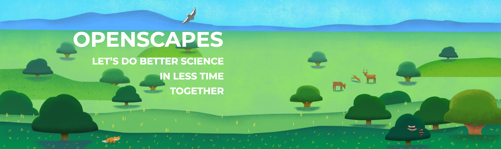

WHAT WE DO
At Openscapes, we champion open practices in environmental science to help uncover data-driven solutions faster. Regardless of research question, environmental scientists are united by the need to analyze data — and to do so in a way that is efficient, reproducible, and easily communicated. With tools specifically created to meet modern demands for collaborative data science, we help create a positive open culture to enable better science in less time. Our approach: